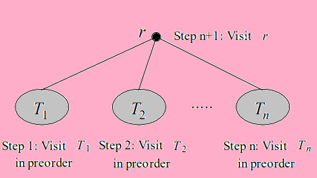
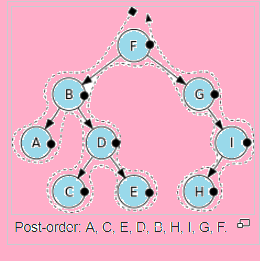

<html>
<head>
<title>welcome</title>
<style>
h1
{
color:blue;
text-align:center ;
text-decoration:underline;
font-size:50px;
}
p
{
font-size:30;
font-style:italic;
}
</style>
</head>
<body bgcolor="pink" >
<h1> Postorder </h1>
<p>      Process all nodes of a tree by recursively processing all subtrees, then finally processing the root. <br/>Let T be an ordered rooted tree with root r. If T consists only of
r, then r is the postorder traversal of T. Otherwise, suppose that
T1,T2,    ,Tn are the subtrees at r from left to right in T. The
postorder traversal begins by traversing T1 in postorder, then T2 in
postorder, ..., then Tn in postorder, and end by visiting r..
</p>

<br/>
<h2>Psuedo code of postorder</h2>
<p>Procedure postorder (T : ordered rooted tree)
r = root of T
for each child c of r from left to right
begin
T (c) := subtree with c as its root
postorder (T (c))
end
list r</p>
<h2>Algorithm Postorder</h2>
<ol>
<li> Traverse the left subtree.</li>
<li> Traverse the right subtree.</li>
<li> Visit the root.</li>
</ol>
<h3> Example-</h3>

</body>
</html>